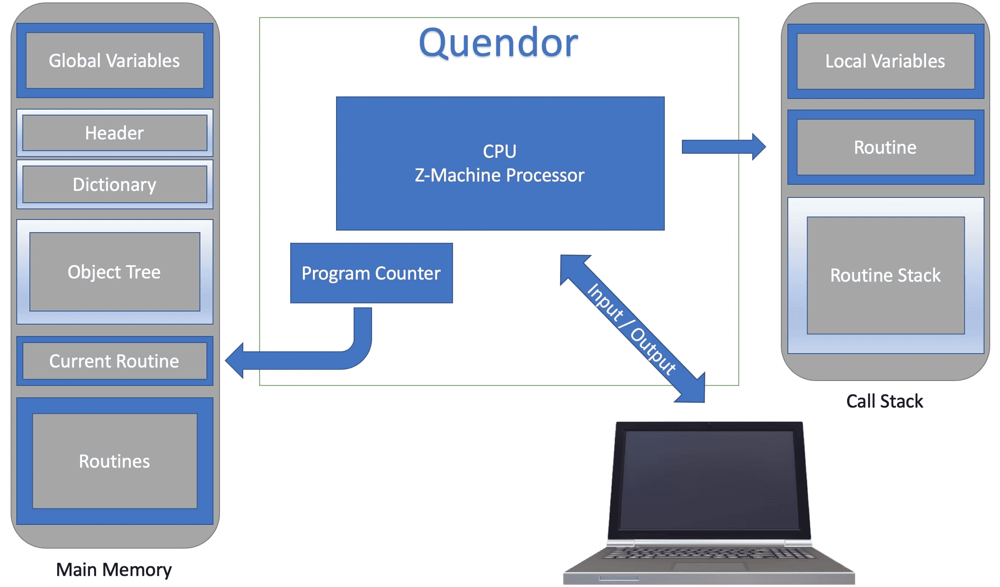

Memory and State in Quendor
There is one core area that you must set up first for a Z-Machine implementation: memory. Without having the virtual machine's memory set up, you can't effectively do anything. It first helps to consider the basic architecture.
The Architecture
The Z-Machine specification does provide an architecture diagram. I've modified and updated that slightly.
The key thing to focus on is the "Main Memory," which Quendor will have to establish and then maintain. What this does is take you into the notion of state as well.
Memory Maps
The bytes in the zcode file that a Z-Machine executes represent the program's memory map. The Z-Machine specification says the following:
The memory map of the Z-machine is an array of bytes with “byte addresses” running from 0 upwards.
This is consistent with everything I said in the bits and bytes section in terms of being byte-oriented. The memory map is a region of memory that contains the program's instructions and data. The Z-Machine specification also brings up an interesting point:
Note that the routine call state, the stack and the PC must be stored outside the Z-machine memory map, in the interpreter's private memory.
That idea of "interpreter's private memory" caused a little cognitive friction for me when I first read it. In a program like Quendor, it's worth asking how the "Z-Machine memory map" and the "interpreter's private memory" are distinguished.
The answer is that in the context of a program that emulates a Z-Machine, you can think of the "Z-Machine memory map" as a bytes object that represents the memory map of the Z-Machine program. This bytes object is created by reading the contents of a zcode file into memory. The "interpreter's private memory" refers to the memory used by the program (Quendor) to execute the Z-Machine program (zcode). This includes the stack, the routine call state, and the program counter (PC), all mentioned in the specification and shown in the diagram.
What this means is that in order to implement the Z-Machine, you need to create data structures in the "interpreter's private memory" — i.e., my TypeScript logic for Quendor — to represent the stack, routine call state, and program counter. Crucially, however, these data structures are separate from the bytes object that represents the memory map of the Z-Machine program.
So, at the bare minimum, any Z-Machine implementation must read in a zcode binary file.
Getting State
So, if Quendor is going to load up the "Z-machine memory map," then, when Quendor executes the Z-Machine program that it loads, it will use the "interpreter's private memory" to keep track of the state of the program. Here, the "interpreter's private memory" refers to Quendor itself!
Quendor has to get a bytes object that represents the memory map of the Z-Machine program. That memory map is used to look up instructions and data and to update the state of the program as that program executes.
Given this context, is it fair to say that the zcode memory map contains the "story state" or "game state"? Is it equally fair to say that the private memory contains the "interpreter state"? Arguably, that is a good way to think about it, and it certainly helped me as I conceptualized things. So, let's break this down.
-
The Z-Machine memory map, which is represented by the
bytesobject that I obtain by reading a zcode program file, contains the story state or game state. This includes the program's instructions, data, and global variables. - The interpreter's private memory, on the other hand, contains the interpreter state. This includes the stack, the routine call state, the program counter, and other data structures that are used by the interpreter to execute the Z-Machine program.
As Quendor executes the Z-Machine program, it will use, or rather be the interpreter's private memory, which will be used to keep track of the program's state. This state includes the values of the program's variables, the contents of the stack, and the current position in the program's execution. This relates back to memory because the Z-Machine memory map is used to look up instructions and data and to update the program's state as it executes.
State of Play
Consistent with my conceptualization above, consider this next bit from the Z-Machine specification:
The 'state of play' is defined as the following: the contents of dynamic memory; the contents of the stack; the value of the program counter (PC), and the 'routine call state' (that is, the chain of routines which have called each other in sequence, and the values of their local variables).
This tells me that the "state of play" in the Z-Machine combines the story state and the interpreter state. It includes the contents of dynamic memory, which is part of the story state, as well as the contents of the stack and the routine call state, which are part of the interpreter state. The Z-Machine specification also says:
The entire state of play must be stored when the game is saved.
That's an interesting and crucial point! Let's talk about why.
Saving and Restoring
In the Z-Machine, it's possible to save and restore the state of play, which includes the contents of dynamic memory, the contents of the stack, the value of the program counter, and the routine call state. This state can be saved to a file and then later restored to continue the program's execution from where it left off. When you save the state of play, you create an image of the program's current state. So, for example, in a game, if the player moves around, picks up items, solves puzzles, and so on, all of that is stored in the "state of play."
Restarting
Beyond saving and restoring the state of play in the Z-Machine, there's also a "restart" operation. This resets the story state to its initial state, as it was when the program was first loaded into memory. This means that any changes to the story state made during the program's execution are discarded, and the program starts again from the beginning.
Undoing
It's also worth noting that in the Z-Machine, there's the idea of an "undo" operation. This operation allows for reverting the current state of play to a previous state. This means that the program's execution is rewound to an earlier point in time, and its state is restored to what it was at that point. Not all Z-Machine programs will necessarily support this operation, and even if they do, the number of undo "steps" available can be limited.
State is Serialized Memory
All of this is important to understand the notion of state and how that ties into memory. The state of the zcode program at any given time is a serialization of its memory. The Z-Machine specification says this:
Z-machine programs are stored on disc, or archived on the Internet, in what are called story files. (Since they were introduced to hold interactive stories.) A story file consists of a snapshot of main memory only.
Thus, an interpreter implementation like Quendor takes a file as input, which is just a straight-up serialization of the story state. What should become clear with all this context is that as I move forward with an interpreter, like Quendor, you will spend a lot of time figuring out how to decode that state.
Decoding that state means working with actual zcode files. These will effectively serve as the oracles for determining what is and is not correct behavior in the context of reading the memory and determining the state.
So, for example, if you have a Zork 1 zcode program, then loading up that program is getting the memory map or initial state of play. Executing the instructions in that program will allow the program to be "played" and thus allow for state changes.